Explore Szczecin
A Brief History
Szczecin stands at the Oder estuary where Pomeranian dukes, Swedish kings, and Prussian administrators successively governed a strategic Baltic port. Rebuilt after heavy wartime damage, the city preserves a ducal castle, harbour gates, and boulevards overlooking the river. Post-1945 border changes placed it in Poland while its architecture still records centuries of Hanseatic and Central European maritime trade.
Attractions Map
Top Sights & Activities
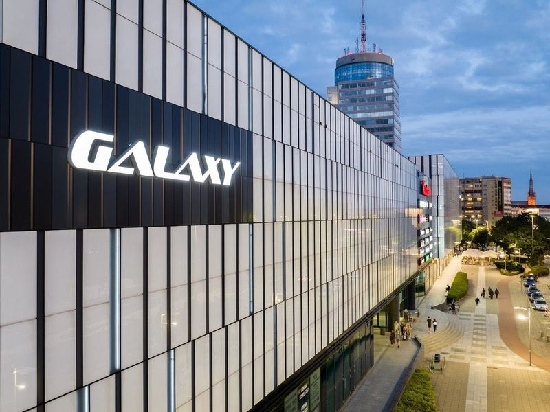
Galaxy Centrum
Galaxy Centrum, the largest shopping mall in the western Pomeranian region, offers a plethora of shops and services for patrons. The mall boasts a food court as well as a cinema and bowling alley for entertainment purposes. In addition to numerous clothing stores, there are also electronic shops, grocery stores, newspaper stands, and coffee shops available. Parking is available at a fee but is well-organized and clean.
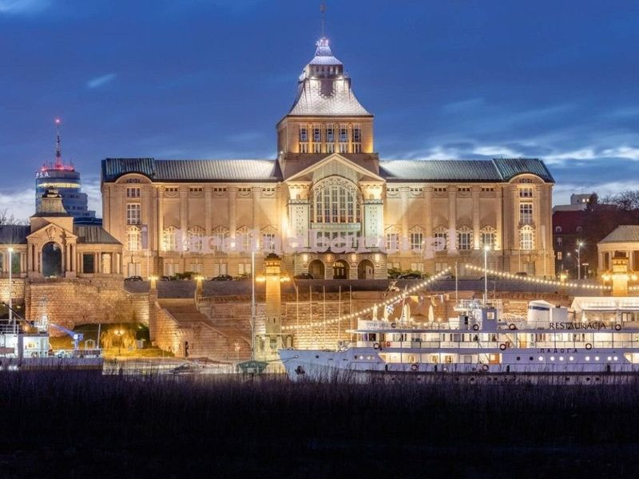
Wały Chrobrego
Waly Chrobrego, also known as Chrobry Embankment, is a historic landmark in Szczecin, Poland. This elevated promenade was built in 1902 and stretches along the Oder river for about 500 meters. It offers views of the water and buildings such as Ducal Castle, the National Museum, and the Cathedral Basilica of St James the Apostle.
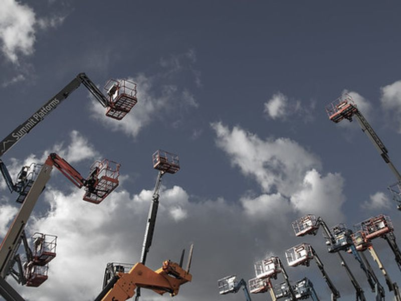
Craneosaurs
Craneosaurs are painted dinosaur sculptures installed along Szczecin's boulevards as part of a public art trail linked to the city's harbour cranes. The figures stand on terraces overlooking the Oder and reference both industrial heritage and family-friendly city marketing along Wały Chrobrego.

Krzysztof Jarzyna Monument
The Krzysztof Jarzyna monument in Szczecin honours a local cultural figure associated with the city's theatre and music scene. The bronze bust stands in a square near performance venues in the centre. Plaques record his contribution to post-war cultural life in Pomerania.
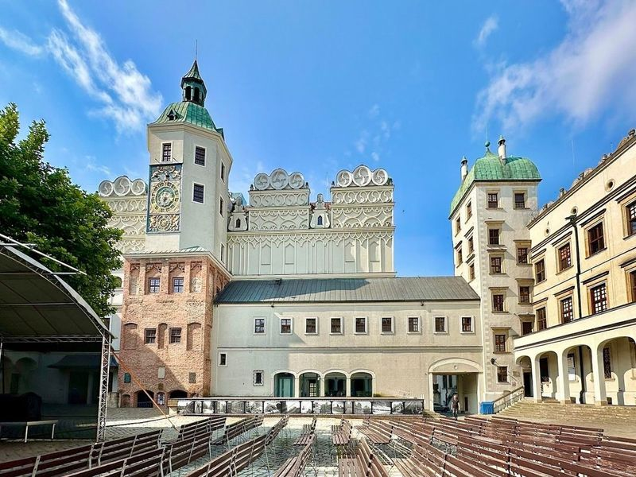
Pomeranian Dukes' Castle in Szczecin
The Pomeranian Dukes' Castle in Szczecin is a renovated castle that hosts art and history exhibitions, as well as classical concerts, some of which take place outdoors during the summer. The castle offers various events such as the Night of Bogislaw X, featuring free admission to exhibitions, a visit to the Bell Tower, and a museum shop.
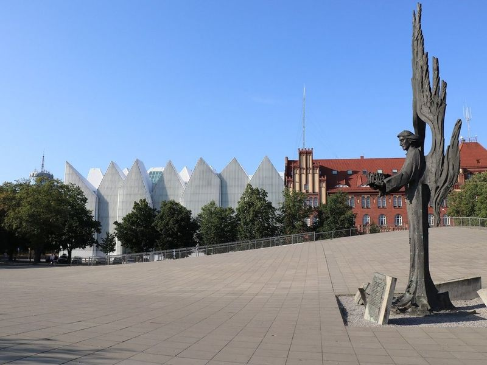
Solidarity Square
Solidarity Square, also known as Plac Solidarnosci, is a significant site in Szczecin that holds historical and cultural importance. It serves as a commemorative space for events such as the war in Ukraine and offers a tranquil setting for picnics on comfortable benches with a view of the modern philharmonic facade. The square's infrastructure is praised for its beauty and design, making it an essential stop while visiting Szczecin.
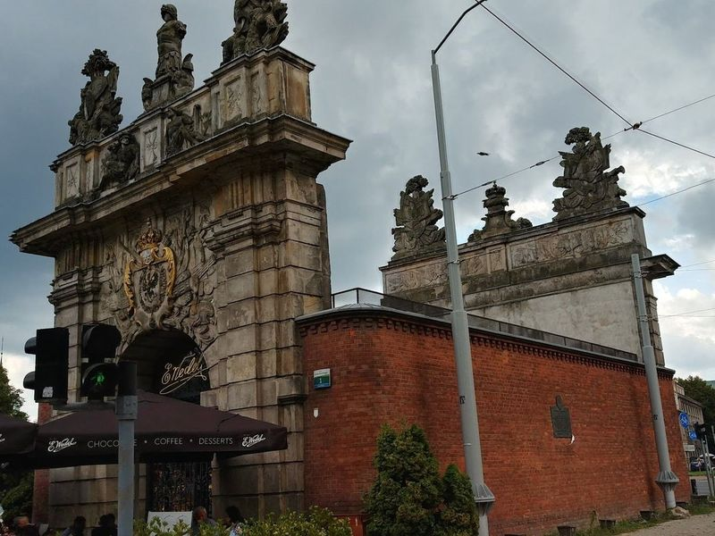
Royal Gate
The Royal Gate in Szczecin, originally a part of the city's fortifications, now houses a charming chocolate cafe. Dating back to 1725-1727, this grand gate showcases Baroque architecture with intricate emblems and statues adorning its massive stone walls. Visitors can enjoy coffee and cake while admiring the impressive old arches overlooking Solidarity and Zolnierza Polskiego squares.
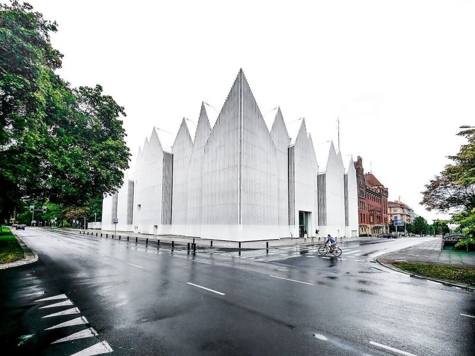
Karlowicz Philharmonic
The Karłowicz Philharmonic in Szczecin opened in 2014 in a white geometric concert hall designed by Barozzi Veiga on Małopolska Street. The building's sharp roofline faces the Odra River and houses two auditoriums seating about 1,000 and 200 listeners. The orchestra is named for composer Mieczysław Karłowicz and programmes symphonic, chamber, and choral concerts.
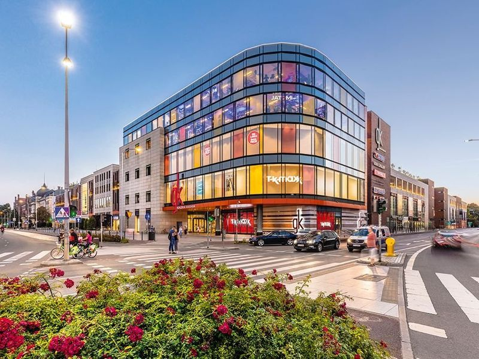
Galeria Kaskada
Galeria Kaskada is a modern and lively mall that boasts a wide array of fashion outlets, dining venues, cafes, and supermarkets. It is a popular destination in Szczecin due to its extensive selection of both local and international brands at competitive prices. The food court offers an impressive variety of cuisines to suit any taste preference. The mall's spacious layout provides a relaxing shopping experience for visitors.
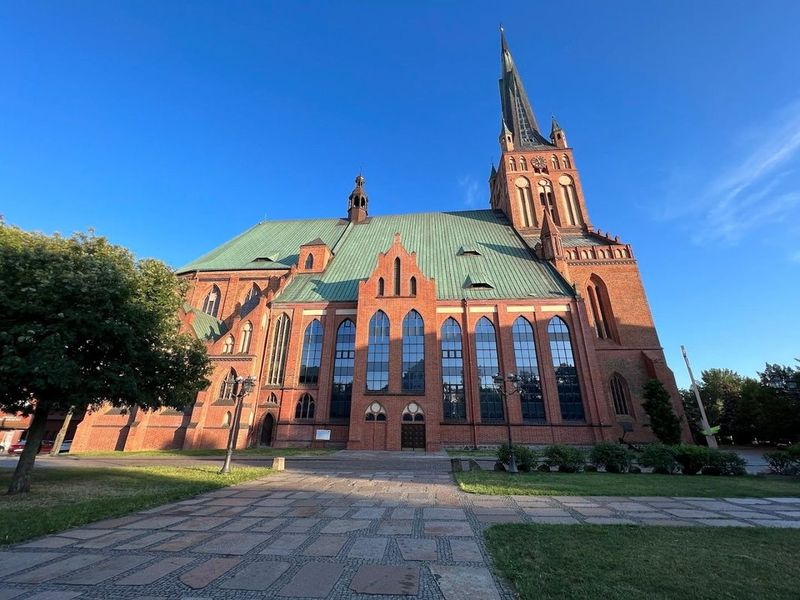
Archcathedral Basilica of St. James the Apostle
The Archcathedral Basilica of St. James the Apostle is a baroque Roman Catholic cathedral in Szczecin, Poland. It was rebuilt in the 17th century and features a towering spire that reaches 110 meters high. This cathedral is an important historical landmark during World War II, and visitors can observe tanks placed by Hitler to counter air strikes from the top skyline view for a nominal fee of $3.
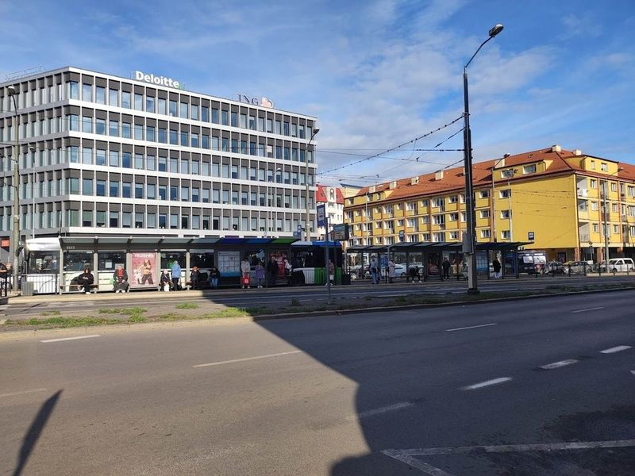
Harbor Gate
Adorned with intricately carved Prussian emblems, this 1740 stone gateway formed part of the former city fortifications. The entire area exudes an atmosphere of excitement and appreciation for ancient architectural styles. Walking along the streets, one is surrounded by awe-inspiring historical buildings that elicit exclamations of amazement. I recommend visiting this city as it boasts numerous remarkable sites that are worth experiencing at least once in a lifetime.
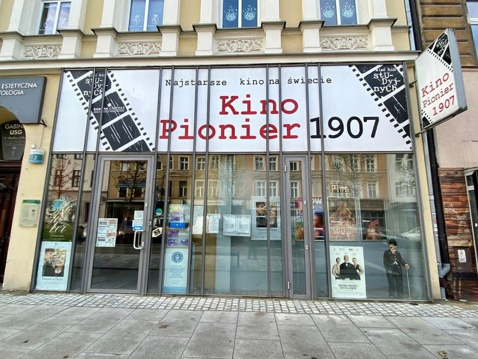
Kino Pionier 1907
Kino Pionier 1907, also known as the Pioneer Cinema, holds the prestigious title of being the oldest continuously operating cinema in the world. Originally opened in 1909 as the Helios Cinema, it now operates as an art studio cinema with a unique atmosphere. The cinema is famous for its charming Kiniarnia, where visitors can enjoy a movie while seated at tables and sipping coffee.
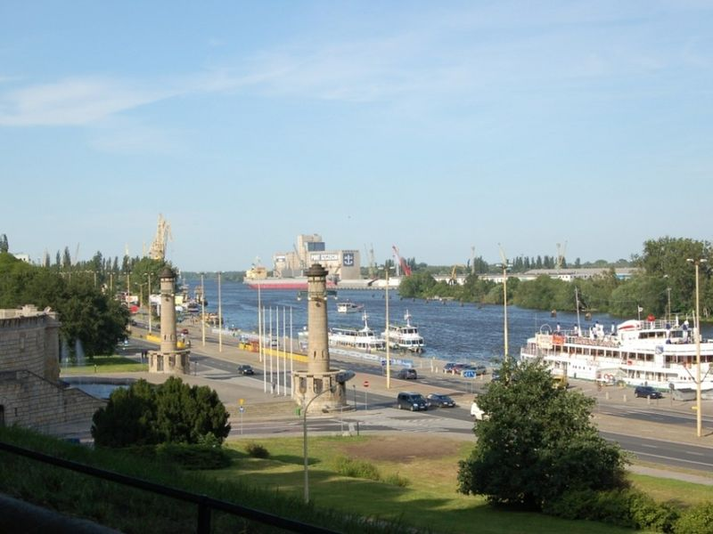
Szczecin Boulevards
The Szczecin Boulevards line the western bank of the Oder with promenades, cafés, and views toward the harbour islands. Reclaimed industrial quays now form a continuous riverside walk linking the castle quarter to modern marinas. Summer events and outdoor seating animate the waterfront.